María Antonia Lucena nació el 24 de diciembre de 1948 en Málaga , está casada , tiene dos hijos , es licenciada en Ciencias Políticas por la Universidad Complutense de Madrid y pertenece al Cuerpo Técnico Superior de la Administración de la Seguridad Social.

Ha ocupado diversos puestos en la Dirección General del Instituto Nacional de la Seguridad Social , en la que fue adjunta al director general y subdirectora general adjunta de Gestión de Prestaciones.
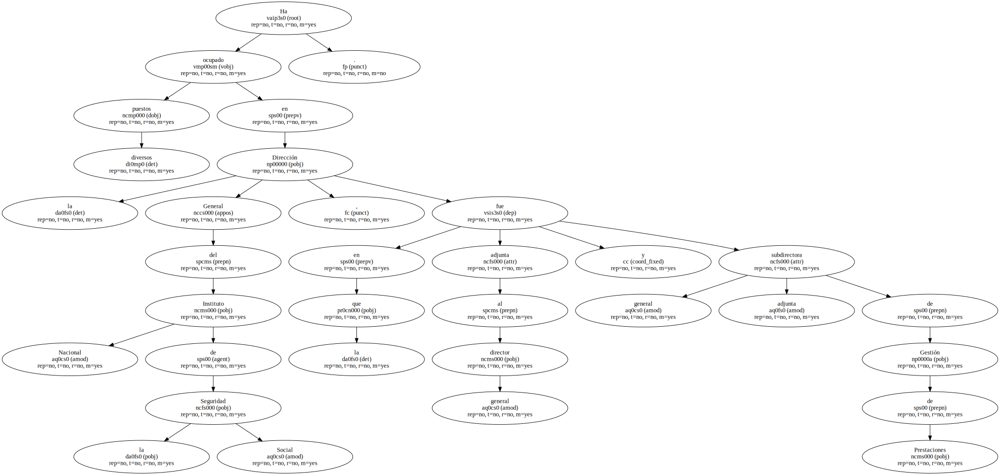Desde mayo de 1998 era vocal asesora de la Dirección General de la Tesorería General de la Seguridad Social.
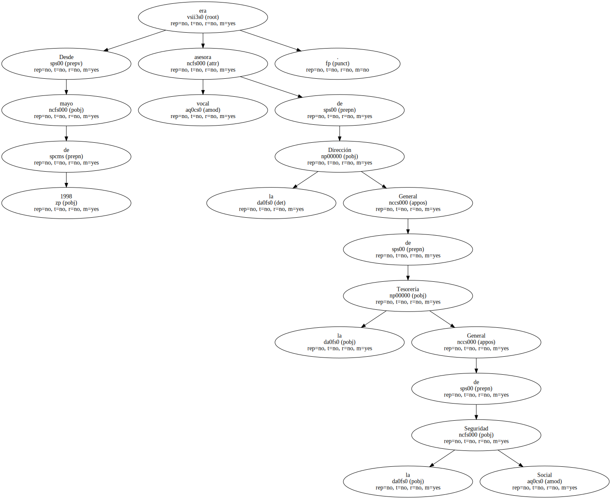El consejero de Agricultura y Medio Ambiente de Castilla-La Mancha , Alejandro Alonso , acusó hoy al ex presidente del Fondo Español de Garantía Agraria , Nicolás López de Coca , de pretender reactivar el asunto del lino.
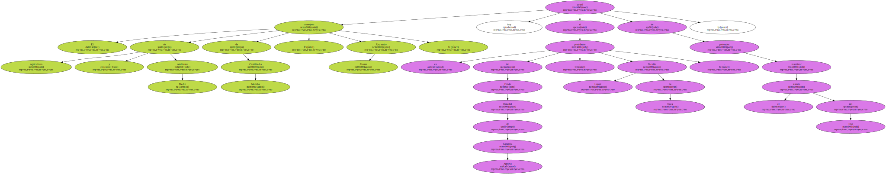Alonso , que hoy se desplazó a Talavera de la Reina ( Toledo ) para presentar el Programa Operativo , preguntado por la demanda que López de Coca ha presentado contra el presidente regional , José Bono , a quien reclama 30 millones de pesetas por lesionar su honor , dijo que " este señor , ex director general , cesado inmediatamente tras la aparición del escándalo por la entonces ministra , pretende reactivar el asunto del lino ".
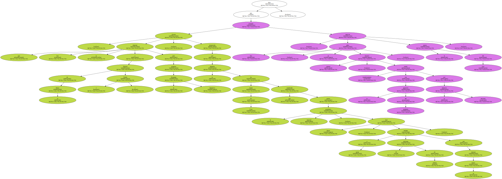Alejandro Alonso indicó que López de Coca pretende " echar un poco leña y volver a recordar otra vez los incendios y el lino que se quedaba en la carretera tirado " , mientras que " mucha gente nos habíamos propuesto que el desgraciado asunto del lino pasara a la historia ".
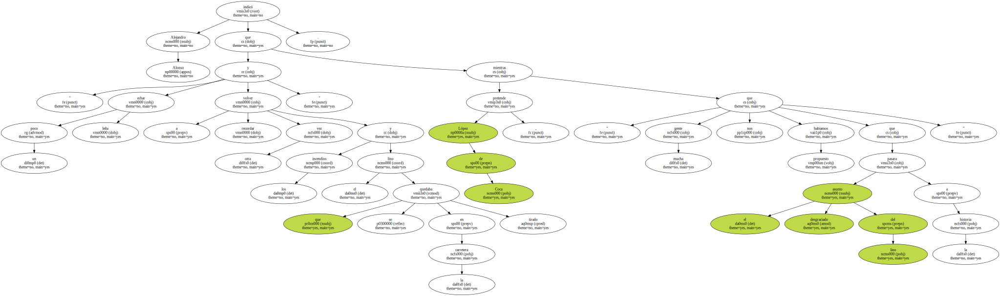El consejero de Agricultura calificó lo ocurrido con las subvenciones al lino en nuestro país de " un hecho desgraciado para el prestigio de España y , sobre todo , del Gobierno central ".
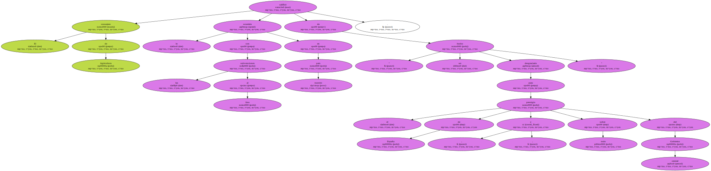Alonso añadió que " preferiríamos que el caso del lino pasara a la historia , a los anales de hechos desgraciados , pero lo que este señor o sus asesores hayan decidido hacer es su responsabilidad y no tenemos nada que decir ".
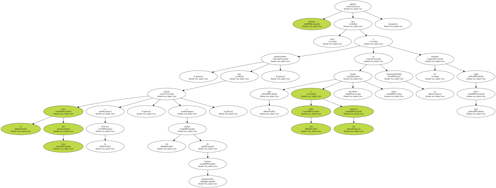Familiares de López de Coca tienen participación en la empresa Colisur 2000 , ubicada en Picón ( Ciudad Real ) , una planta transformadora a la que la Consejería le retiró la autorización para emitir certificados de transformación para el cobro de las ayudas comunitarias que existen para esta actividad.
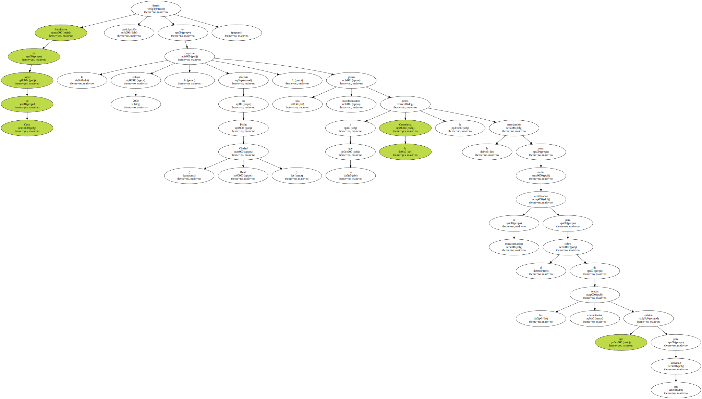La Consejería de Agricultura emitió esta resolución después de comprobar en una investigación que ni su plantilla , ni su maquinaria , ni sus consumos de luz eran suficientes para procesar la cantidad de lino que certificaban.
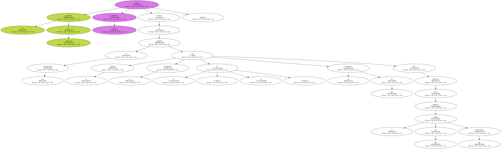El grupo resultante de la compra de la empresa cárnica Navidul por Campofrío facturará 250.000 millones de pesetas y logrará un cash-flow de 20.000 millones , según un comunicado conjunto de ambas compañías.
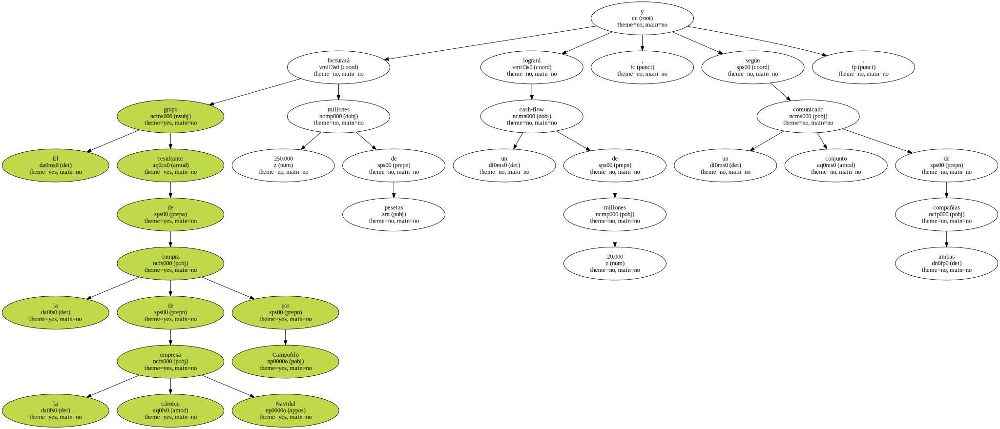El texto señala que la operación refuerza su liderazgo en el mercado cárnico español y convierte a Campofrío en el tercer operador de este sector en Europa.
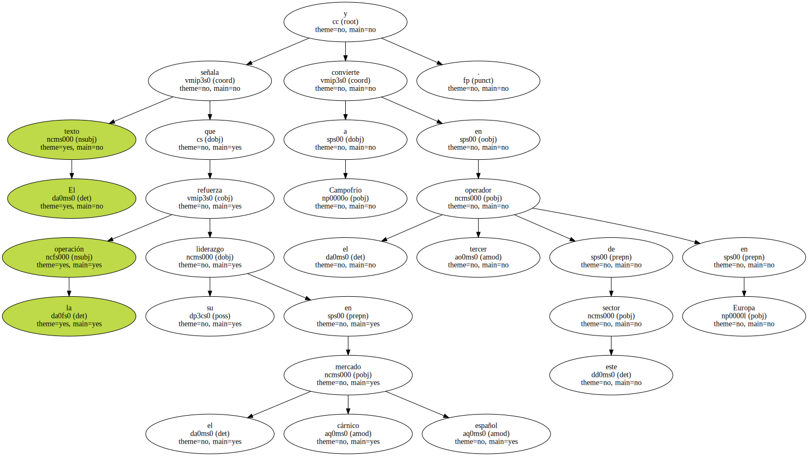El acuerdo prevé que Campofrío adquiera en metálico el 49,5 por ciento del capital de Navidul y el restante 50,5 por ciento lo haga a través de una ampliación de su capital del 16 por ciento , que suscribirá íntegramente la familia Díaz , accionista mayoritario de la sociedad absorbida.
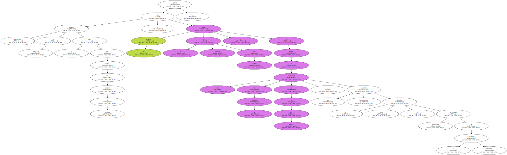" El objetivo de esta integración - dice el comunicado - es lograr una dimensión europea y crear un nuevo grupo más competitivo " y agrega que Pedro Ballvé , actual presidente de Campofrío , y Luis Serrano , presidente de Navidul , ocuparán de forma conjunta y durante tres años la presidencia del nuevo grupo.

Campofrío materializó el pasado mes de marzo la compra del 87 por ciento de OMSA Alimentación , empresa de elaborados cárnicos con sede en Valencia.
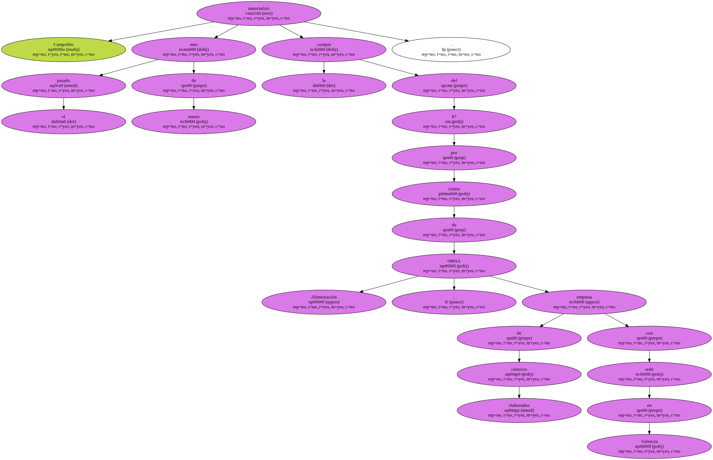Según los primeros cálculos del grupo presidido por Ballvé , la unión de Campofrío y OMSA elevaría las ventas de ambas sociedades hasta los 204.020 millones de pesetas ( 1.226 millones de euros ) para 2000.
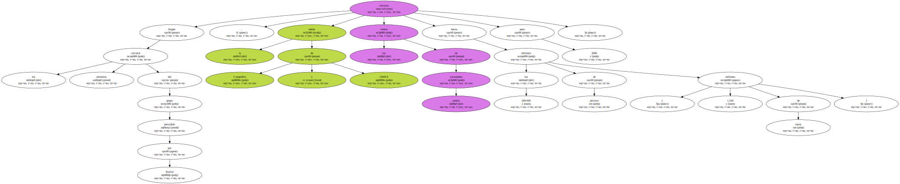El grupo Campofrío , que registró durante 1999 unas ventas de 136.400 millones de pesetas , controlará con Navidul y OMSA Alimentación una cuota del mercado nacional de cárnicos de entre el 21 y el 22 por ciento.